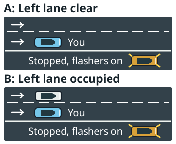

Use the Official Florida Driver License Handbook for exact state rules and final wording.
Florida permit practice
Florida Permit Practice Test: 40 of 50 Pass Score
Practice Florida Class E permit-test topics, see the 40 of 50 passing score context, then separate TLSAE or DETS, the Class E Knowledge Exam, and learner permit documents or office issuance.
Last updated:
Source contextOfficial Florida Driver License Handbook
PrivacyAnswers stay in this browser
Quality checkOriginal practice questions
UpdatedNovember 24, 2026
Before test day
Florida DMV test-day path
Use this practice page, then finish with what to bring, official documents, road signs, mistakes, and visit logistics in one saved checklist.
ChecklistOpen Florida test-day checklistPlan ID, residency proof, forms, appointment, fees, signs, mistakes, and retake rules.
Road signs drillContinue practice loopMove between rules questions and image signs before the final review.
Official sourceOfficial Florida Driver License HandbookUse the official source for exact wording and final requirements.
Florida: move over, slow down, or pull over?

A: A disabled car has its hazard lights on, and the lane to your left is clear. Does the rule apply to an ordinary car?
Yes. A stopped disabled car with flashers qualifies. Signal, check the lane, and move one lane away when it is safe. For a disabled car in Florida, visible people, warning lights, or emergency flares or signs can also trigger the rule; you do not need to see a tow truck.
B: You cannot change lanes safely on this 45 mph road. Does slowing to 40 mph satisfy the rule?
No. In Florida at this posted limit, subtract 20 mph from 45 mph: slow to 25 mph. Do not squeeze into the occupied lane. On a two-lane road posted at 20 mph or less, use the separate 5 mph rule rather than subtracting 20.
Now an ambulance is moving up behind you with its siren on. Do you use the same passing-speed rule?
No. The ambulance is approaching, not parked at the roadside. Yield, pull as reasonably close as possible to the nearest curb or edge, stop clear of an intersection, and wait for it to pass. Follow an officer's directions if given.
Florida Statutes, section 316.126: approaching emergency and stopped vehicles · Official Florida Driver License Handbook: Move Over Law
Florida exam snapshot
Florida permit practice with official context in view
Before you start, use this snapshot to keep the FLHSMV source, pass rule, and best practice order in view.
FLHSMV publishes the official testing or study guidance; this site is only practice.
Use this as context, then aim higher in practice before test day.
Missed categories tell you which handbook section to reread first.
- 1Read the official handbook
Start with signs, right of way, lane markings, speed, parking, and impaired-driving rules in the Official Florida Driver License Handbook.
- 2Run quick practice
Use the 15-question round to find obvious gaps without spending too long.
- 3Drill image signs
Switch to Road Signs when visual recognition feels slow or uncertain.
- 4Finish with mock exam
Use the 40-question mixed mode only after reading explanations from missed questions.
Practice one question without the interactive quiz
The quiz has not loaded. This example is from the same practice set and is not scored.
A pedestrian is crossing at an unmarked crosswalk at an intersection. You should:
There is no working traffic signal or sign requiring a stop, and the pedestrian is already on your half of the road.
- Yield and let the pedestrian cross safely
- Honk so the pedestrian stops
- Drive through if you are below the speed limit
Check the answer
Yield and let the pedestrian cross safely
Slow down and stop if necessary to let the person cross safely. Florida's rule covers this unmarked intersection crosswalk too; the lack of paint is not permission to continue. The same duty to yield applies if a person crossing from the opposite half is close enough to be endangered.
DMV practice engine
Choose a practice mode
Use a mixed round to practice signs and driving rules, or use the signs round to work on recognition alone.
1. Answer
2. Read explanation
3. Review saved mistakes
4. Retake weak topics
- Quick Practice15 mixed questions for a fast diagnostic.
- Road Signs24 image questions with a practice target of 19 correct. This is the same sign round as on the Florida signs page, not the official Class E exam.
- Mock ExamA longer mixed round for score confidence and weak-area review.
Interactive practice
Florida quick practice
15 mixed questions for a fast diagnostic.
1. What is the official Florida Class E Knowledge Exam pass mark?
2. Florida says the Class E Knowledge Exam covers:
3. A 16-year-old applying for a first Florida learner's license has never been licensed elsewhere and has not taken driver education. Which course is required for this path?
4. A pedestrian is crossing at an unmarked crosswalk at an intersection. You should:
There is no working traffic signal or sign requiring a stop, and the pedestrian is already on your half of the road.
5. What does a red curb usually mean?
6. If your vehicle begins to hydroplane, what should you do first?
7. In Florida, at night, you should dim high beams for approaching traffic because:
8. If a school bus ahead has flashing red lights, the safest general response is to:
In Florida, you are behind the stopped bus. Its stop arm is out, and a raised median separates the opposite direction of traffic.
9. Which choice best describes defensive driving?
10. In Florida, when parking uphill with a curb, your front wheels should generally be turned:
11. What should you do if another driver is tailgating you?
12. Before entering a roundabout, you should:
13. If traffic signals are not working, you should usually treat the intersection as:
14. A safe following distance should increase when:
15. In Florida, when a traffic light turns yellow as you approach, you should:
Interactive practice
Florida road signs image test
24 image questions with a practice target of 19 correct. This is the same sign round as on the Florida signs page, not the official Class E exam.
1. For Florida practice, this sign tells drivers that:
2. What is the safest meaning of this sign?
3. What should a driver do at this sign?
4. For Florida practice, what action is prohibited by this sign?
5. What does the ALL WAY plaque below this STOP sign tell you?
6. What movement does this regulatory sign block?
7. At this sign, what should a driver do while the signal is red?
8. This sign tells a driver to:
9. This sign indicates:
10. What does this sign set?
11. For Florida practice, this sign means drivers should not:
12. For Florida practice, what should you expect near this sign?
13. This sign warns drivers to watch for:
14. What road situation does this sign warn about?
15. For Florida practice, this sign means:
16. What hazard does this sign warn about?
17. This sign marks or warns of:
18. For Florida practice, what does this orange sign usually mean?
19. This sign warns that ahead there is:
20. What does this sign warn about?
21. This sign warns drivers about:
22. What service does this blue sign identify?
23. For Florida practice, this sign warns drivers to watch for:
24. What does this sign mean?
Interactive practice
Florida 40-question mock exam
A longer mixed round for score confidence and weak-area review.
1. What is the official Florida Class E Knowledge Exam pass mark?
2. Florida says the Class E Knowledge Exam covers:
3. A 22-year-old applying for a first Florida driver license has never been licensed elsewhere and has not completed a qualifying Florida driver education course. Which course requirement normally applies?
4. For Florida practice, what action is prohibited by this sign?
5. This sign indicates:
6. What does this sign set?
7. For Florida practice, what should you expect near this sign?
8. This sign warns drivers to watch for:
9. What road situation does this sign warn about?
10. For Florida practice, this sign means:
11. A Florida school bus is stopped with its stop arm out across a paved center turn lane. You are approaching from the opposite direction. What must you do?
12. Which choice best describes defensive driving?
13. In Florida, when parking uphill with a curb, your front wheels should generally be turned:
14. What should you do if another driver is tailgating you?
15. Before entering a roundabout, you should:
16. At a Florida intersection, the signal facing you is dark but the signals controlling cross traffic still work. There is a marked stop line and no officer is directing traffic. What should you do?
17. A safe following distance should increase when:
18. In Florida, when a traffic light turns yellow as you approach, you should:
19. If you miss your exit on a highway, what should you do?
20. In Florida, when approaching a railroad crossing with lowered gates, you should:
21. If your brakes fail, which response is safest?
The brake pedal has sunk and the older car's conventional brakes have lost pressure. This is not an emergency stop with working anti-lock brakes (ABS).
22. A flashing red traffic light means:
23. A flashing yellow traffic light means:
24. In Florida, when turning left at a green light without a green arrow, you should:
25. In Florida, when a lane is ending ahead, you should:
26. In a work zone, drivers should:
27. If you are being passed, you should:
28. Driving after alcohol, cannabis, or impairing medicine is dangerous because it:
29. Before opening a vehicle door next to traffic, you should:
30. If a vehicle behind you wants to pass on a two-lane road, you should:
31. A blind spot is:
32. In Florida, when roads are icy, the best first adjustment is to:
33. If a tire blows out, you should:
34. You are behind a bicyclist in your Florida travel lane. Oncoming traffic leaves room to pass with only about two feet of clearance. What should you do?
35. In Florida, when backing out of a driveway, you should:
36. If your vehicle starts to skid, the safest general response is to:
37. In Florida, at a marked crosswalk with a pedestrian waiting or crossing, you should:
For this question, there is no working traffic signal or sign requiring a stop. The pedestrian is already crossing on your half of the road.
38. In Florida, at a stop sign, what should you do?
39. In Florida, at a four-way stop, if two vehicles arrive at the same time, who should usually go first?
40. A solid yellow line on your side of the road usually means:
Real test details
Florida Class E exam and first-time course requirements
The 40-of-50 mark is for the official Class E exam, not the course or the 40-question round here. Check your course path separately before enrolling.
Florida Class E Knowledge Exam has 50 multiple-choice questions.
FLHSMV lists 40 correct answers, or 80 percent, as the passing score.
The official exam covers traffic laws, safe driving practices, and identifying traffic controls.
Check the Florida course paths before enrolling: DETS for most first-time applicants under 18, TLSAE for most first-time adults.
Practice by topic
Florida permit topics to study after each quiz
Review missed traffic control, safe driving, or right-of-way topics before repeating the mixed round. If your miss was about DETS, TLSAE, or prior schooling, use the Class E map above instead.
Florida: Recognize signs by shape, color, and driver action before memorizing answer choices.
Review sign libraryFlorida: Practice who yields at four-way stops, left turns, pedestrians, emergency vehicles, and roundabouts.
Review missed yield questionsFlorida: Connect posted limits with weather, visibility, school zones, and stopping distance.
Review speed questionsFlorida: Study signals, turn lanes, yellow lights, protected turns, and lane positioning.
Review signal questionsFlorida: Check curb colors, hills, no-parking zones, and safe door-opening habits.
Review parking tableFlorida: Practice fog, rain, hydroplaning, icy roads, skids, and headlight choices.
Review road conditionsFlorida: Watch for vulnerable road users and rules that require slowing or stopping.
Review sharing the roadFlorida: Know why impairment and distraction affect judgment, reaction time, and legal risk.
Review safety rules
Road sign study guide
Florida mixed-round review: warning or required action?
If a mixed question came down to a sign, pull it out of the full round. Ask whether the sign warns of a hazard or tells you what you must do; then explain the action in your own words.
Florida road sign library
Road signs to recognize before Florida test day
Use this library after the quiz to review signs by type instead of memorizing answers one by one.
Regulatory and control
Florida test-takers should recognize stop, yield, wrong-way, one-way, and speed-control signs quickly.
Stop
Come to a complete stop before the line, crosswalk, or intersection.
Yield
Slow and let traffic or pedestrians with the right of way go first.
Do Not Enter
Do not drive into that road, ramp, or lane.
Wrong Way
You are traveling against the allowed direction. Pull over when you can do so safely; the sign does not authorize a U-turn.
One Way
Traffic flows only in the arrow direction.
No U-Turn
Do not turn around at this location.
Warning signs
Yellow warning signs show what is changing ahead, so the safest answer often involves slowing or preparing to yield.
Pedestrian Crossing
Watch for people crossing and be ready to stop.
Merge
Traffic streams join; adjust speed and spacing.
Lane Ends
An existing lane ends ahead. Follow posted directions and lane markings; merge when safe.
Slippery When Wet
Reduce speed and avoid hard braking or sharp steering.
Signal Ahead
A traffic signal is ahead; prepare to stop.
Divided Highway
A physical median or barrier will separate opposing traffic ahead.
School, rail, and work zones
These signs require extra caution because children, trains, workers, or animals can appear with little warning.
School Crossing
Look for children and obey school-zone speed or stop rules.
Railroad Crossing
Never stop on tracks; obey gates, lights, and crossbucks.
Work Zone
Expect workers, cones, flaggers, lane shifts, and slower traffic.
Roundabout
Yield before entering and follow the circular traffic flow.
Animal Crossing
Scan the roadside and slow when animals may enter the road.
Hospital
A hospital or emergency medical facility is nearby.
Quick facts
- Official source
- Official Florida Driver License Handbook
- Official format
- 50 multiple-choice questions
- Pass rule
- 40 of 50 correct (80%)
- Practice modes
- Quick, road signs, and mock exam
Florida practice score interpretation
| Practice result | What it means | Next study move |
|---|---|---|
| 13-15 correct | Strong quick-practice result. | Take the road-sign mode, then try the 40-question Florida mock exam. |
| 10-12 correct | Good start, but a few categories need reinforcement. | Reread the missed explanations and retake the weak categories later. |
| 7-9 correct | You know some basics but may be relying on intuition. | Read the Official Florida Driver License Handbook again before taking more practice questions. |
| 0-6 correct | Treat this as a diagnostic, not a failure. | Start with signs, signals, right of way, following distance, and safe-speed rules. |
Florida weak-area categories to review
| Category | What to review | Why it matters |
|---|---|---|
| Road signs | Shapes, colors, regulatory signs, warning signs, work zones, and railroad crossings. | Sign recognition is fast on the real test and easy to confuse under pressure. |
| Right of way | Four-way stops, pedestrians, left turns, emergency vehicles, and roundabouts. | Many test questions ask who should wait or yield. |
| Road conditions | Fog, rain, hydroplaning, night driving, skids, and following distance. | Safe speed changes with weather and visibility. |
| State process | FLHSMV source pages, documents, and official handbook wording. | Process questions are easy points if you read the official page once. |
Fast answer: Florida permit practice plus pass-score context
Use this page when you want Florida Class E practice and the pass rule in the same place. FLHSMV lists 50 multiple-choice questions with 40 correct answers, or 80 percent, needed to pass; this page adds quick practice, road-sign pictures, mock exam mode, and links to official Florida sources.
Why Florida practice should start with the official source
Private practice tests help you find weak areas, but the Official Florida Driver License Handbook and FLHSMV pages are the final source for wording, documents, fees, and eligibility.
How to use this Florida permit practice test
Read the exam snapshot first, then start with quick practice. Move to road signs if visual recognition feels weak, and use the mock exam only after reviewing missed explanations.
What this page can and cannot do
This page can help you find weak areas and practice common road-rule patterns. It cannot replace the Official Florida Driver License Handbook or guarantee the exact wording on the official test.
Best low-effort study loop
Take one short round, read only the explanations you missed, review one handbook section, then retake later. That loop is easier to maintain than reading the whole manual repeatedly.
What score do you need to pass the Florida permit test?
FLHSMV lists the Florida Class E Knowledge Exam as 50 multiple-choice questions with 40 correct answers, or 80 percent, needed to pass. Treat a practice score below that as a topic map: signs, right of way, speed, safe driving, or process confusion.
Florida practice should answer the process confusion too
A learner can score well on practice questions and still be stuck if TLSAE, the Class E Knowledge Exam, the appointment, and the first permit issuance step are treated as one task. Use this page to diagnose study topics, then open the Class E map and document checklist for the process side.
Practice score is not the same as permit readiness
If the next step is an online Class E exam, approved provider, Parent Proctoring Form, document review, or first permit issuance, switch from question practice to the Florida process checklist before scheduling.
Florida study moves that save time
The goal is not to click practice questions forever. Use each result to decide the next handbook section.
Practice the words that change the rule
If you know the sign but miss the answer, check whether words such as unless, not less than, or until changed the action.
Practice English exam wordingReview signs by shape and color
Shape and color often reveal the action before you read the words.
Use the long round late
The 40-question mode is best after you have already fixed obvious misses.
Florida Class E exam confusion map
Choose the right course before you enroll
First-time applicants under 18 ordinarily take DETS. Applicants 18 and older ordinarily take TLSAE unless an exception applies. Neither course is a Class E exam pass.
Check the Florida course pathsThe rules and traffic-controls test
The official Class E Knowledge Exam is the multiple-choice test on Florida traffic laws, safe driving practices, and identifying traffic controls.
FLHSMV exam sourceDocuments and office step still matter
After exam prep, confirm identity, Social Security number, residential address, age or consent rules, fees, and whether the permit issuance step must happen in person.
FLHSMV document sourceWhat to study first
Start with visual recognition
Prioritize regulatory signs, direction signs, road markings, and signal-control situations before memorizing isolated definitions.
Turn signs into driver actions
For each missed rule, write what the driver should do next: stop, yield, wait, turn from a specific lane, or continue only when safe.
Use practice tests as diagnosis
Do not only chase a high score. Log wrong answers by topic so your next drill targets the pattern instead of replaying the same mixed test.
Turn a practice score into the next action
The useful question is not only whether the score passed. It is what the score tells you to study next.
Use 80 percent as the minimum, not the goal
If a practice round is near the line, build margin before test day. One missed sign or right-of-way cluster can move the result quickly.
Open score calculatorSwitch from mixed practice to visual signs
When missed answers involve traffic controls, do a Florida road-sign round before another mock exam.
Practice Florida signsSeparate study readiness from permit readiness
If the blocker is TLSAE, online testing, documents, appointment, or permit issuance, move to the Class E map instead of retaking random questions.
Open Class E mapAfter practice, check the Florida process step
Use this when the practice score looks fine but the licensing path is still unclear.
Confirm provider, proctoring, and result submission
If you plan to test online, check FLHSMV and provider instructions before assuming the pass record, Parent Proctoring Form, and permit visit are handled.
FLHSMV exam pageKnow the random re-test possibility
A third-party Class E pass can still be selected for a mandatory random re-test before issuance, so build a backup plan instead of treating a pass as the last gate.
Class E mapMove from study mode to document mode
Before the visit, check identity, Social Security number, residential address, age or consent, appointment, fees, and local service-center instructions.
Florida documentsChecklist
FAQ
Is this Florida permit practice test official?
No. TestDayTools is independent and unofficial. Confirm final requirements with FLHSMV and the Official Florida Driver License Handbook.
What should I study first for the Florida permit test?
Start with traffic controls and road signs, then right-of-way, traffic laws, and safe driving practices. Use missed-question notes to turn each wrong answer into the next short review block.
What score do I need to pass the Florida permit test?
FLHSMV lists 40 correct answers out of 50 questions, or 80 percent, as the passing score for the Florida Class E Knowledge Exam.
Do I need an account to use this practice test?
No. The score and weak-area feedback run in your browser and are not saved to a profile.
Why does the mock exam use 40 questions?
The mock mode is a longer diagnostic. Some states have shorter or longer official exams, so the official format is shown in the exam snapshot.
Should I trust practice questions or the official handbook?
Use practice questions for feedback, but use the official handbook and agency pages as the final source.
Is TLSAE or DETS the same as the Florida Class E Knowledge Exam?
No. TLSAE or DETS is a course requirement for many first-time drivers. The Class E Knowledge Exam is the separate knowledge test on Florida traffic laws, safe driving practices, and traffic controls.
Can I take the Florida Class E Knowledge Exam and get my learner permit in one appointment?
Treat the exam result and learner permit issuance as related but separate steps. Before choosing an appointment, confirm FLHSMV document rules, age or consent requirements, fees, and whether your testing provider or service center handles the permit issuance step.
Can I take the Florida permit test online?
Some Florida testing paths use approved providers, but eligibility and proctoring rules can change by applicant type. Use the FLHSMV Class E Knowledge Exam page and approved provider guidance before assuming online testing is available for your situation.
After a Florida online Class E exam pass, what should I check next?
Confirm provider instructions, Parent Proctoring Form requirements, whether the result is submitted to FLHSMV, identity documents, Social Security number, residential address, appointment or service-center steps, and fees.
Can a third-party Florida Class E pass still lead to a retest?
Yes. FLHSMV warns that customers who pass through an authorized third-party administrator may be selected for a mandatory random re-test before issuance.